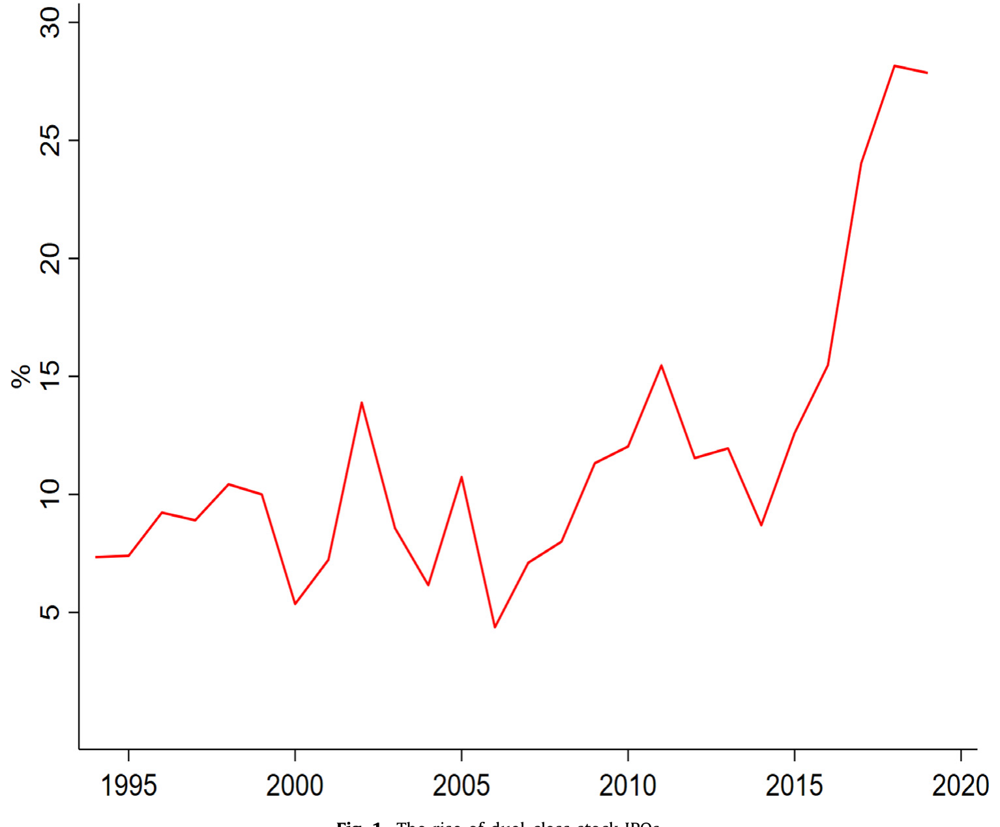
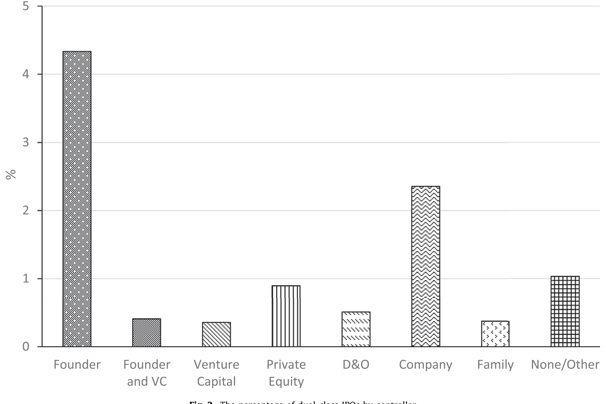
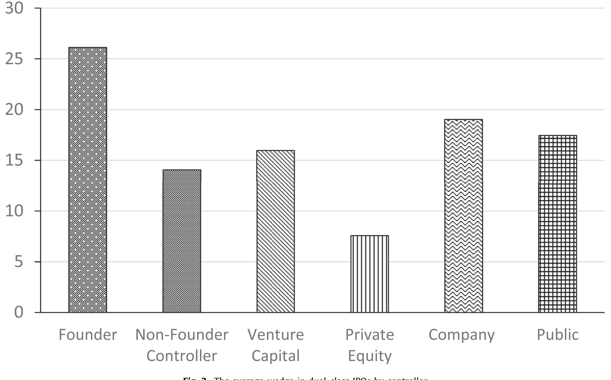
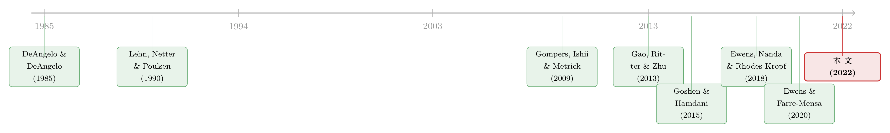

founders 把控制权写进了招股书：双层股权 IPO 为什么卷土重来
本文读的是 Aggarwal, Eldar, Hochberg & Litov (2022, Journal of Financial Economics)：作者手工构建了一套能区分「控制人类型」的双层股权 IPO 数据库，发现 2017–2019 年近 30% 的美国 IPO 采用双层股权、而这股浪潮几乎完全由 创始人（founder）控制的公司推动；背后的机制是创始人相对投资者的议价能力上升——私募资本越充裕、技术让公司越不缺钱，创始人就越能把超级投票权写进招股书。
1 一个本不该发生的「复兴」
先讲一个本该让公司治理学者皱眉的事实。
如 Fig. 1 所示，2017–2019 年间，差不多有 30% 的美国 IPO 是带着「多重股票类别」上市的——也就是所谓的 双层股权 (dual-class stock) 结构。Google（2004）、Facebook（2012）、Snap（2017），这些耳熟能详的名字，无一例外都把一类「一股多票」的超级投票权股票，牢牢攥在了创始人手里。

Figure 1: The rise of dual-class stock IPOs
这件事为什么值得皱眉？因为按照公司治理的标准逻辑，它根本不该流行。双层股权的本质，是把投票权和现金流权（cash flow rights，即对公司利润的索取权）人为地撕开：控制人只持有很小一块经济利益，却握着远超其出资比例的控制权。教科书会告诉你，这会放大 代理成本 (agency costs)——决策的人只承担一小部分后果，却保留了抵御收购、自我巩固的能力。Goshen and Hamdani (2015) 正是这么说的：历史上双层股权用得很少，因为它的代理成本太高。
而且，过去十几年，机构投资者和代理投票顾问一直在向上市公司施压，要求拆掉那些「保护管理层、隔绝股东监督」的条款——交错董事会 (staggered boards)（Cremers et al., 2017）、毒丸 (poison pills)（Catan, 2019）都在退潮。照理说，双层股权也该跟着一起退场才对。更何况，近年近一半的 IPO 都来自有 风险投资 (venture capital, VC) 背景的公司（Ritter, 2020），而 VC 通常被认为最在乎治理、最该坚持「一股一票」。
于是悬念就摆在这里：在所有力量都指向「拆掉超级投票权」的年代，为什么 IPO 公司反而越来越爱用双层股权？正如 Adams and Ferreira (2009) 那句被本文反复引用的话——"我们对双层股权的决定因素，其实仍然知之甚少"。
2 先把「黑箱」拆开：不是所有双层股权都一样
要回答这个问题，作者做的第一件、也是最关键的一件事，是拒绝把双层股权当成一个单一的「类型」。
这正是本文最大的方法论贡献。过去的文献——包括最经典的 Gompers, Ishii and Metrick (2009)——衡量的都是「董事与高管（directors and officers）」手里的超额投票权。但作者指出，现实中双层股权公司的控制人千差万别：可能是创始人，可能是与创始无关的非创始董事/高管，可能是把子公司分拆上市的母公司/控股公司，可能是世代相传的家族，甚至可能是想在 IPO 后继续掌控公司的 私募股权 (private equity, PE) 投资者。
举两个反直觉的例子。Chipotle（2006 年上市）不是被创始人控制，而是被麦当劳控制；First Data（2016 年上市）则被知名 PE 机构 KKR 控制。在这两家公司里，董事与高管的经济权益其实超过了他们的投票权——也就是说，按老办法去量「董事/高管的楔子」，你会得到一个负值，从而完全错过了真正的控制人（麦当劳、KKR）手里那块正的超级投票权。
所以作者提出一个更干净的度量：公众股东的楔子 (wedge)——不管控制人是谁，公众股东的投票权比他们的经济权益落后多少。这才是双层股权代理成本的真实刻度。这个看似只是「换个分母」的动作，恰恰是后面所有结论能站得住的地基。
为此，他们手工构建了一套覆盖 1994–2019 年、识别每一家双层股权 IPO 的股东、投票权与控制人类型的新数据库。最终样本是 5907 家 IPO，其中 607 家是双层股权，占比 10.28%。
3 真正的反转：浪潮是「创始人」一个人掀起来的
把控制人拆开之后，反转出现了。
在全部 IPO（含单层与双层）里，最常见的控制人是创始人（占全部 IPO 的 4.8%），其次是母公司/控股公司（2.4%）、PE（0.9%）、非创始董事/高管（0.5%）、VC（0.4%）。但更要命的是它的时间趋势：
2017–2019 年，全部 IPO 中有 19% 是创始人控制的双层股权公司——而在 1994–2006 年，这个数字只有 3%。与此同时，其他类型控制人的双层股权占比基本纹丝不动。
如 Fig. 2 所示，把双层股权 IPO 按控制人类型拆开后，那条向上猛冲的曲线几乎全部来自创始人；其余类型平平稳稳。

Figure 2: The percentage of dual-class IPOs by controller
不仅数量在涨，楔子的大小也在涨。如 Fig. 3，创始人投票权与经济权益之间的楔子逐年扩大，而其他控制人的楔子大体不变、甚至有所收窄。

Figure 3: The average wedge in dual-class IPOs by controller
两张图合在一起，传达的是同一个信息：所谓「双层股权 IPO 的崛起」，本质上是创始人掌控公司治理能力的崛起。这就把一个笼统的现象，收敛成了一个可以被解释的、单一的核心问题——为什么创始人越来越说得上话？
4 识别策略：把「议价能力」翻译成可观测的变量
作者给出的假说，借自 Goshen and Hamdani (2015)：双层股权的决定因素，是创始人相对投资者的议价能力 (bargaining power)。当创始人议价能力更强时，他们就更能在 IPO 谈判桌上为自己争取到更大的控制权，公司也就更可能采用双层股权。这对解释 Facebook、Snap 这类「强势创始人 + 软件公司」尤其贴切——按 Goshen and Hamdani (2015) 的说法，这些创始人极度看重「贯彻自己愿景」的能力，一个强势的谈判地位让他们能在不丧失控制权的前提下融到钱。
但「议价能力」看不见摸不着。本文的核心识别工作，就是把它翻译成两类可观测的代理变量，并且分别对应两条机制。
第一条机制：私募资本越多，创始人的外部选择就越好。 当私募市场上「钱在追项目」时，估值被抬高，创始人就有了 IPO 之外的退出与融资选项。为此作者构造两个代理变量：(1) 行业层面的 干火药 (dry powder)——VC 已募集但尚未投出的资金量；(2) IPO 前一年行业层面的后期 VC 投资额 (late-stage VC investment)。两者都基于 VC 资金流，因为 VC 最有可能成为「上市」的替代选项（2010 年以来 57% 的 IPO 有 VC 背景）。
这里识别上的关键一步是：所有回归都加了行业固定效应 (industry fixed effects)。这意味着对私募资本代理变量的系数，是从同一行业内、跨时间的融资可得性变化里估出来的——而不是「软件行业天生 VC 多」这种跨行业的横截面差异。结果与假说一致：私募资本越充裕的行业-年份，创始人控制与创始人楔子的可能性都显著更高；而对母公司、PE 这类控制人则没有这种正相关——因为它们本就不靠外部股权融资，私募资本多寡不影响它们的议价地位。这个「安慰剂式」的对照，是本文最让人信服的地方。
第二条机制，也是真正动用了准实验设计的一步：技术冲击让公司「不那么缺钱」。 当一家公司不需要太多资本时，局面就反过来了——是 VC 在抢着投它，而不是它在和别人抢钱。Ewens, Nanda and Rhodes-Kropf (2018) 记录了一个干净的冲击：2006 年云计算 (cloud computing) 的出现，大幅降低了软件与网络创业的试验、设立与扩张成本。Veeva 就是个极端例子：只拿了 $7 百万 VC 投资，2013 年 IPO 后估值却高达 $4.4 十亿——它当然是双层股权。
作者于是围绕云计算的引入做了一个 双重差分 (difference-in-differences, DiD)：比较 Cloud 行业与非 Cloud 行业、在 2006 年前后采用「向创始人让渡控制权」的双层股权结构的概率变化。结论是，云计算引入后，Cloud 行业的公司更可能采用创始人控制的双层股权，且这一效应在 VC 背景的 IPO 中尤为明显。背后的平行趋势 (parallel trends) 论证，依赖于「若没有云计算这一外生技术冲击，Cloud 与非 Cloud 行业的双层股权采用趋势本应平行演进」。
5 几个「顺手」却重要的发现
沿着这条主线，作者还捡到几个有意思的副产品。
其一，VC 不再是「一股一票」的卫道士。 全样本期内，VC 背景与创始人楔子之间没有显著关系——平均而言，VC 似乎并不排斥创始人的投票权超过其经济权益。早年创始人控制的双层股权公司较少有 VC 背景，但近年越来越能吸引 VC 投资。这与 Ewens et al. (2018) 所说的「VC 治理角色随时间弱化」相互印证：在抢项目的竞争里，VC 对创始人越来越「客气」了。
其二，外国公司、尤其是中国公司，更可能由创始人控制、且楔子更大。 作者把它解释为监管的产物——香港和中国内地交易所过去对「同股不同权」的限制，逼得这些创始人控制的公司只能跑到美国上市。对关心外资发行人的人来说，这是一条很值得往下挖的线索。
其三，落日条款 (sunset provisions)：议价能力的另一面镜子。 双层股权不一定永续。「时间落日 (time sunsets)」规定结构在 IPO 若干年后（如五年）自动转为单层；「所有权落日 (ownership sunsets)」则在控制人经济持股跌破某阈值时转换。Bebchuk and Kastiel (2017) 主张用时间落日，因为代理成本随公司年龄上升。本文发现：落日条款更常见于 VC 背景的双层股权 IPO，而在创始人控制的公司里反而更少——这再次与「创始人议价能力上升」一脉相承：议价能力越强，越不必给自己的超级投票权安一个到期日。
6 文献脉络
把这篇论文放进历史里看，它处在两条河流的交汇处。
一条是双层股权本身的研究。早期 DeAngelo and DeAngelo (1985) 指出双层股权让控制人能在不承担过多现金流风险的前提下保住控制权；Jarrell and Poulsen (1988) 与 Lehn, Netter and Poulsen (1990) 把它放在反收购与「巩固控制权」（相对杠杆收购）的框架里看。真正第一个全面的实证研究是 Gompers, Ishii and Metrick (2009)，他们发现双层股权在媒体行业和「以创始人命名」的公司里更常见，并把它归因于内部人的私人收益——但他们量的，仍然是董事/高管的楔子。Iliev and Lowry (2020) 进一步检验信息不对称（用 R&D 等代理）与双层股权的关系，结果没找到联系。本文的位置，是第一个把控制人类型拆开、并首次提出「创始人议价能力」这一决定因素的研究。
另一条河流是私募资本市场的扩张。Gao, Ritter and Zhu (2013) 与 Doidge et al. (2018) 记录了公众公司数量的持续下降、公司「赖在私募市场」更久；Ewens and Farre-Mensa (2020) 则指出，让私募融资更易获得的监管变化，直接导致了 IPO 数量的下降。本文把这两条河汇到一起：私募资本（尤其后期资本）越充裕，创始人相对投资者的议价能力越强，于是双层股权 IPO 越多。

7 评论与延伸（Q&A + 研究方向）
(a) 几个可能的疑问
Q：这只是「软件公司多」造成的假象吗？
不太像。一方面，所有回归都含行业固定效应，识别来自行业内跨时间的变化；另一方面，作者明确报告：即便剔除软件与数据管理高度集中的行业，结论仍定性不变。所以它不是 Facebook/Snap 这几家撑起来的故事。
Q：把「公众股东楔子」当核心度量，到底比老办法强在哪？
老办法只量董事/高管的楔子，在 Chipotle（被麦当劳控制）、First Data（被 KKR 控制）这类公司里会得到负值，从而漏掉真正控制人的超级投票权。公众股东楔子不管控制人是谁，直接刻画「外部股东的投票权落后其经济权益多少」，才是代理成本的正确刻度。
Q：DiD 的平行趋势可信吗？
云计算（2006）是相对外生的技术冲击，且效应集中在 Cloud 行业的 VC 背景 IPO，方向与机制一致，这增强了可信度。但仍需警惕：2006 年前后恰逢私募资本与 IPO 监管的多重变化，Cloud 行业可能同时受其他同期冲击影响——这类「捆绑冲击」是这条识别最大的隐忧。
Q：相关性能不能反过来读——是创始人先想控制，才去找私募钱？
这是本文最难排除的内生性。作者的回应有三：行业固定效应、对其他控制人类型的「安慰剂」对照（私募资本对它们无效），以及「IPO 前董事会控制权并不预测 IPO 时的控制权」（基于
Ewens and Malenko, 2020的数据）。这些都指向「私募可得性 → 议价能力 → 控制权」的方向，但严格的因果仍是开放问题。
Q：双层股权到底好不好？这篇论文回答了吗？
没有，这是一篇关于决定因素而非后果的论文，全文不讨论估值。它只是提醒：既然控制人类型如此不同，过去那些「双层股权与公司价值」的研究（如
Smart et al., 2008；Cremers et al., 2018）若用董事/高管楔子，可能得到被扭曲的结论，值得用公众股东楔子重做。
Q：为什么 VC 不再坚持一股一票，反而帮创始人「上锁」？
因为议价天平偏了。当私募资本充裕、技术让创业公司不那么缺钱时，是 VC 在抢着投，而不是创始人在求钱。落日条款的证据也佐证这点：VC 背景 IPO 更常带落日，而创始人控制的公司更少——议价能力强的人，不必给自己的控制权设到期日。
(b) 几个可能的研究问题与提案
1）外资发行人的「控制权套利」与债券定价
【经济故事】本文发现中国等外国公司更可能创始人控制、楔子更大，部分源于母国交易所对同股不同权的限制。一个自然的延伸是：这些「为控制权而来美国上市」的公司，其债券投资者如何给治理风险定价？超级投票权抬高的代理成本，是否体现在信用利差里？ 【可行性】中。需要把本文的控制人数据库与 TRACE 公司债交易、Mergent FISD 发行信息合并；识别上可借助「母国上市规则变化」（如香港 2018 年放开同股不同权）做 DiD。样本量是主要约束——发债的双层股权外国公司不多。
2）双层股权与债权人保护：楔子如何改写债务契约
【经济故事】股东内部投票权与现金流权的撕裂，理论上会同时影响债权人——控制人若只持小块经济利益，资产替代 (asset substitution) 动机更强，债权人可能要求更严的契约条款（covenants）或更高利率。 【可行性】中。数据可得（本文楔子度量 + DealScan 贷款契约 + FISD 债券契约）。难点在识别楔子的外生变动；可用本文的私募资本/云计算工具变量作为楔子的来源，做两阶段设计。
3）私募资本充裕度与公众股东「流动性折价」
【经济故事】若双层股权由议价能力驱动，那么在私募资本越充裕的年份上市的公司，公众股东承受的楔子越大——这是否转化为二级市场更差的流动性（更宽买卖价差、更高价格冲击）？把治理楔子翻译成微观结构成本，是一条尚未被走通的路。 【可行性】高。本文楔子数据 + CRSP/TAQ 流动性度量即可；行业-年份的干火药作为外生变动来源。识别相对干净，doable。
4）落日条款的「到期效应」事件研究
【经济故事】时间落日意味着若干年后双层结构自动转单层。当这一天临近、控制权即将稀释时，股价、债券利差、乃至投资行为会如何反应？这是检验「双层股权代理成本是否真实」的一个干净的事件窗口。 【可行性】中高。需要从本文样本里识别带时间落日的公司及其转换日期，样本随时间推移会越来越多；事件研究方法成熟，但早期样本偏薄。
5）VC 治理角色弱化的跨市场检验
【经济故事】本文记录 VC 对创始人越来越「客气」。若 VC 监督真的弱化，是否在被投公司上市后的债务融资上留下痕迹（如更高的事后违约、更弱的契约）？这把「VC 议价能力下降」从股权延伸到信用市场。 【可行性】中。需 VC 背景标记（VentureXpert）+ IPO 后债务数据；识别上较难分离「VC 弱化」与「公司本身更优质」，需谨慎设计对照。
我的判断
这篇论文最大的贡献，不是某个惊人的系数，而是一套更诚实的度量。把「双层股权」这个被文献当成单一类型的黑箱拆成创始人、母公司、PE、家族……并提出「公众股东楔子」，这件事本身就重新校准了整个领域的尺子——它告诉我们，过去用董事/高管楔子做的许多结论，可能量错了对象。在这个意义上，它和近年那批「先把概念量准、再谈因果」的实证工作气质相通（关于把度量本身做对，可参见《把「成交价」从「成交量」里解放出来——重新丈量公司债的流动性》）。
「创始人议价能力」这条主线讲得漂亮，机制清晰、对照干净——尤其是「私募资本对创始人有效、对母公司/PE 无效」这个安慰剂式的反差，比单看一个正系数有说服力得多。但识别上的硬伤也诚实地摆在那里：私募资本可得性与创始人控制权之间，终究是相关而非干净的因果，云计算 DiD 又难免与 2006 年前后的监管变化捆在一起。作者用行业固定效应、对照组与「IPO 前董事会控制权不预测 IPO 控制权」尽力补救，但要把因果钉死，还差一个真正外生、且只作用于「创始人议价能力」这一条渠道的工具。
把它放进 IPO 治理的大图景里，它和「为什么 IPO 公司会主动选择有争议的治理结构」这一问的其他答案彼此呼应（关于这一支文献，可参见《代理问题没有标准答案：一部「公司治理」的发明史》；而双层股权与新股定价的另一面——是否更少被低估——则关联到《7% 这把「固定的尺子」，竟能改写新股的价格》）。
后续我最想看到的，是把这套控制人数据接到信用市场与流动性上去：当投票权与现金流权被撕开，承接代理成本的不只是公众股东，还有债权人和做市商。这恰恰是本文留白、也最值得下一篇论文去填的地方。
参考文献
Adams, R., & Ferreira, D. (2009). Women in the boardroom and their impact on governance and performance. Journal of Financial Economics 94, 291–309.
Aggarwal, D., Eldar, O., Hochberg, Y. V., & Litov, L. P. (2022). The rise of dual-class stock IPOs. Journal of Financial Economics 144(1), 122–153.
Bebchuk, L., & Kastiel, K. (2017). The untenable case for perpetual dual-class stock. Virginia Law Review 103, 585–631.
DeAngelo, H., & DeAngelo, L. (1985). Managerial ownership of voting rights: a study of public corporations with dual classes of common stock. Journal of Financial Economics 14, 33–69.
Doidge, C., Kahle, K., Karolyi, G. A., & Stulz, R. (2018). Eclipse of the public corporation or eclipse of the public markets? Journal of Applied Corporate Finance 30, 8–16.
Ewens, M., & Farre-Mensa, J. (2020). The deregulation of the private equity markets and the decline in IPOs. Review of Financial Studies 33, 5463–5509.
Ewens, M., Nanda, R., & Rhodes-Kropf, M. (2018). Cost of experimentation and the evolution of venture capital. Journal of Financial Economics 128, 422–442.
Gao, X., Ritter, J., & Zhu, Z. (2013). Where have all the IPOs gone? Journal of Financial and Quantitative Analysis 48, 1663–1692.
Gompers, P., Ishii, J., & Metrick, A. (2009). Extreme governance: an analysis of dual-class firms in the United States. Review of Financial Studies 23, 1051–1088.
Goshen, Z., & Hamdani, A. (2015). Corporate control and idiosyncratic vision. Yale Law Journal 125, 560–795.
Iliev, P., & Lowry, M. (2020). Venturing beyond the IPO: financing of newly public firms by pre-IPO investors. Journal of Finance 75, 1527–1577.
Jarrell, G., & Poulsen, A. (1988). Dual-class recapitalizations as antitakeover mechanisms: the recent evidence. Journal of Financial Economics 20, 129–152.
Lehn, K., Netter, J., & Poulsen, A. (1990). Consolidating corporate control: dual-class recapitalizations versus leveraged buyouts. Journal of Financial Economics 27, 557–580.
Smart, S., Thirumalai, R., & Zutter, C. (2008). What's in a vote? The short- and long-run impact of dual-class equity on IPO firm values. Journal of Accounting and Economics 45, 94–115.